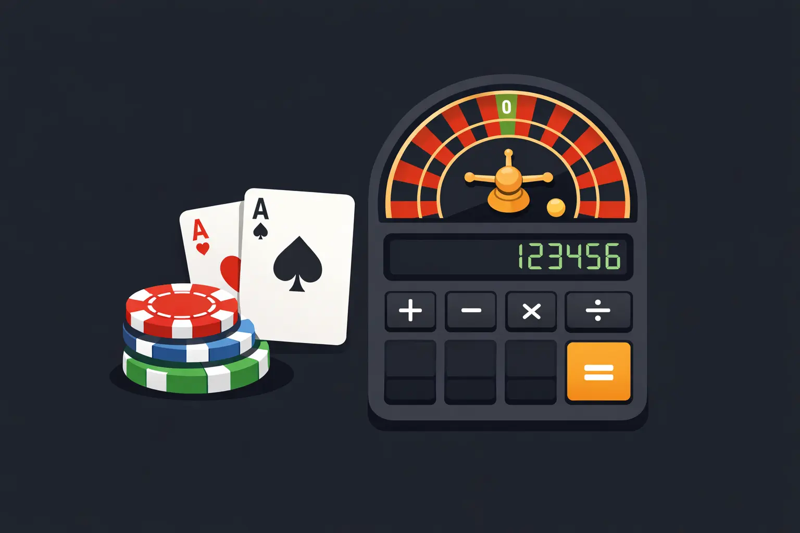

$200 Casino Bankroll Simulator

See how long your bankroll might last based on bet size, house edge, and number of bets. This is an estimate — casinos still chew people up for breakfast.

$200 Casino Bankroll Simulator
Many players start online casino sessions with a small bankroll — often around $200. But how long can that bankroll realistically last? The answer depends on several factors including bet size, house edge, and simple probability.
This interactive simulator models thousands of casino sessions using probability-based simulations. By adjusting the starting bankroll, bet size, and house edge, you can see how likely it is for a bankroll to survive, shrink, or grow over a series of bets.
Instead of relying on lucky streaks or gambling myths, the tool uses Monte Carlo simulations to estimate realistic outcomes over many sessions. The charts below show the distribution of possible results and an example session illustrating how a bankroll might rise and fall during play.
Use the calculator to experiment with different scenarios and see how small changes in bet size or house edge can dramatically affect the risk of losing your entire bankroll.
Calculator
Try a Game:
Results
Simulation Outcome Distribution
Example Bankroll Session
What This Means
This tool gives a rough estimate using expected value and simplified variance. It is not a promise, a prediction, or a magic money printer. It’s just math trying to stop people from walking into a buzzsaw blind.
How Casino Bankroll Simulation Works
Every casino game has a mathematical advantage called the house edge. This edge represents the percentage of each bet the casino expects to keep over time.
Even games with a small house edge, such as blackjack, slowly tilt the odds in favor of the casino. Over hundreds or thousands of bets, the expected value of the house edge becomes more predictable.
The simulator above uses probability models to estimate what might happen over many simulated casino sessions. Instead of running one single outcome, it performs thousands of simulations to show how often a bankroll survives, busts, or finishes with a profit.
How Long Will $200 Last at a Casino?
Many players start with a $200 bankroll when trying online casinos. The amount of time that bankroll lasts depends heavily on bet size and game odds.
For example, betting $5 per round allows the bankroll to survive many more rounds compared to betting $20 per round. Larger bets increase volatility and dramatically raise the risk of losing the entire bankroll quickly.
By adjusting the bet size and house edge in the simulator above, you can test different strategies and see how likely it is for a bankroll to survive a given number of bets.
Understanding Casino Variance
Short-term gambling results are heavily influenced by variance. Players can experience winning streaks or losing streaks purely due to randomness.
While luck can dominate in the short term, the long-term mathematics of the house edge usually determines the overall outcome.
This simulator helps visualize that concept by generating thousands of simulated sessions. The outcome distribution chart shows how frequently each result occurs, while the session graph illustrates how a bankroll might rise and fall during play.
Casino Bankroll Strategy Basics
Managing a casino bankroll is one of the most important aspects of gambling responsibly. Players who wager too large a percentage of their bankroll on each bet dramatically increase the risk of losing everything quickly.
Many bankroll strategies recommend betting between 1% and 5% of the total bankroll per round. Smaller bets allow a bankroll to survive longer and reduce the chance of early bust.
Legal Online Casinos
This simulator models probability and bankroll risk. If you choose to play online, make sure you only use licensed and regulated casinos available.
We will be adding a comparison of legal casino options soon.
Casino House Edge Explained
Every casino game has a mathematical advantage called the house edge. Even small edges slowly reduce the expected value of a player's bankroll over time.
This simulator shows how that edge affects bankroll survival by running thousands of simulated sessions using probability models.
About This Tool
CashCal is a simple probability simulator designed to show how casino house edge and bet size affect bankroll survival. It is intended for educational purposes and to illustrate basic gambling math concepts.